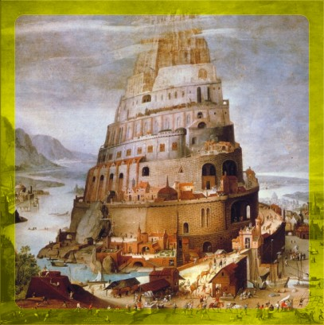

Torre de babel
Año 1757 al 2023.
(2191-1925 aC.)
GENESIS
10:25 Y a Heber nacieron dos hijos: el nombre del uno fue Peleg, porque en sus días fue repartida la tierra; y el nombre de su hermano, Joctán.
11:1 Tenía entonces toda la tierra una sola lengua y unas mismas palabras.
11:4 Y dijeron: Vamos, edifiquémonos una ciudad y una torre, cuya cúspide llegue al cielo; y hagámonos un nombre, por si fuéremos esparcidos sobre la faz de toda la tierra.
11:5 Y descendió Jehová para ver la ciudad y la torre que edificaban los hijos de los hombres.
11:6 Y dijo Jehová: He aquí el pueblo es uno, y todos éstos tienen un solo lenguaje; y han comenzado la obra, y nada les hará desistir ahora de lo que han pensado hacer.
11:7 Ahora, pues, descendamos, y confundamos allí su lengua, para que ninguno entienda el habla de su compañero.
11:8 Así los esparció Jehová desde allí sobre la faz de toda la tierra, y dejaron de edificar la ciudad.
11:9 Por esto fue llamado el nombre de ella Babel, porque allí confundió Jehová el lenguaje de toda la tierra, y desde allí los esparció sobre la faz de toda la tierra.
Reu nace
Nació en el año 1787.
(2161 aC.)
GENESIS
11:18 Peleg vivió treinta años, y engendró a Reu.
Serug nace
Nació en el año 1819.
(2129 aC.)
GENESIS
11:20 Reu vivió treinta y dos años, y engendró a Serug.
Nacor nace
Nació en el año 1849.
(2099 aC.)
GENESIS
11:22 Serug vivió treinta años, y engendró a Nacor.
Taré nace
Nació en el año 1878.
(2070 aC.)
GENESIS
11:24 Nacor vivió veintinueve años, y engendró a Taré.
Abraham nace
Nació en el año 1948.
(2000 aC.)
GENESIS
11:26 Taré vivió setenta años, y engendró a Abram, a Nacor y a Harán.
Sara nace
Nació en el año 1958.
(1990 aC.)
Nota: Podemos conocer la fecha de nacimiento de Sara con base al versiculo siguiente, donde especifica que Abraham tenia cien años cuando Sara tenia noventa.
GENESIS
17:17 Entonces Abraham se postró sobre su rostro, y se rió, y dijo en su corazón: ¿A hombre de cien años ha de nacer hijo? ¿Y Sara, ya de noventa años, ha de concebir?
Peleg muere
Murio a los 239 años de edad.
Vivió del año 1757 al 1996
(2191-1952 aC.)
GENESIS
11:18 Peleg vivió treinta años, y engendró a Reu.
11:19 Y vivió Peleg, después que engendró a Reu, doscientos nueve años, y engendró hijos e hijas.
Nacor muere
Murio a los 148 años de edad.
Vivió del año 1849 al 1997
(2099-1951 aC.)
GENESIS
11:24 Nacor vivió veintinueve años, y engendró a Taré.
11:25 Y vivió Nacor, después que engendró a Taré, ciento diecinueve años, y engendró hijos e hijas.
Noé muere
Murio a los 950 años de edad.
Vivió del año 1056 al 2006
(2892-1942 aC.)
GENESIS
9:28 Y vivió Noé después del diluvio trescientos cincuenta años.
9:29 Y fueron todos los días de Noé novecientos cincuenta años; y murió.